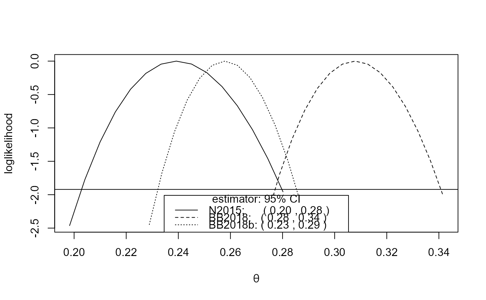

"spm"
objectsR/confidence_intervals.R
spm_confint.Rdconfint method for objects of class c("spm", "exdex").
Computes confidence intervals for \(\theta\) based on an object returned
from spm. Two types of interval may be returned:
(a) intervals that are based on approximate large-sample normality of the
estimators of \(\theta\) (or of \(\log\theta\) if
conf_scale = "log"), and which are symmetric about the respective
point estimates, and (b) likelihood-based intervals based on an adjustment
of a naive (pseudo-) loglikelihood, using the
adjust_loglik function in the
chandwich package. The plot method plots the
log-likelihood for \(\theta\), with the required confidence interval(s)
indicated on the plot.
# S3 method for spm
confint(
object,
parm = "theta",
level = 0.95,
maxima = c("sliding", "disjoint"),
interval_type = c("norm", "lik", "both"),
conf_scale = c("theta", "log"),
constrain = TRUE,
bias_adjust = TRUE,
type = c("vertical", "cholesky", "spectral", "none"),
...
)
# S3 method for confint_spm
plot(x, estimator = "all", ndec = 2, ...)
# S3 method for confint_spm
print(x, ...)An object of class c("spm", "exdex"), returned by
spm.
Specifies which parameter is to be given a confidence interval. Here there is only one option: the extremal index \(\theta\).
A numeric scalar in (0, 1). The confidence level required.
A character scalar specifying whether to estimate confidence intervals based on sliding maxima or disjoint maxima.
A character scalar: "norm" for intervals of
type (a), "lik" for intervals of type (b).
A character scalar. If interval_type = "norm" then
conf_scale determines the scale on which we use approximate
large-sample normality of the estimators to estimate confidence intervals
of type (a).
If conf_scale = "theta"
then confidence intervals are estimated for \(\theta\) directly.
If conf_scale = "log" then confidence intervals are first
estimated for \(\log\theta\) and then transformed back
to the \(\theta\)-scale.
Any bias-adjustment requested in the original call to spm,
using it's bias_adjust argument, is automatically applied here.
A logical scalar. If constrain = TRUE then
any confidence limits that are greater than 1 are set to 1,
that is, they are constrained to lie in (0, 1]. Otherwise,
limits that are greater than 1 may be obtained.
If constrain = TRUE then any lower confidence limits that are
less than 0 are set to 0.
A logical scalar. If bias_adjust = TRUE then,
if appropriate, bias-adjustment is also applied to the loglikelihood
before it is adjusted using adjust_loglik.
This is performed only if, in the call to
spm, bias_adjust = "BB3" or
"BB1" was specified, that is, we have
object$bias_adjust = "BB3"
or "BB1". In these cases the relevant
component of object$bias_sl or object$bias_dj
is used to scale \(\theta\) so
that the location of the maximum of the loglikelihood lies at the
bias-adjusted estimate of \(\theta\).
If bias_adjust = FALSE or object$bias_adjust = "none"
or "N" then no bias-adjustment of the
intervals is performed. In the latter case this is because the
bias-adjustment is applied in the creation of the data in
object$N2015_data and object$BB2018_data, on which the
naive likelihood is based.
A character scalar. The argument type to be passed to
conf_intervals in the
chandwich package in order to estimate the
likelihood-based intervals.
Using type = "none" is not advised because then the
intervals are based on naive estimated standard errors. In particular,
if (the default) sliding = TRUE was used in the call to
spm then the unadjusted likelihood-based confidence
intervals provide vast underestimates of uncertainty.
Additional optional arguments to be passed to
print.default
an object of class c("confint_spm", "exdex"), a result of
a call to confint.spm.
A character vector specifying which of the three variants
of the semiparametric maxima estimator to include in the plot:
"N2015", "BB2018" or "BB2018b". See spm for
details. If estimator = "all" then all three are included.
An integer scalar. The legend (if included on the plot)
contains the confidence limits rounded to ndec decimal places.
A list of class c("confint_spm", "exdex") containing the following components.
A matrix with columns giving the lower and upper confidence
limits. These are labelled as (1 - level)/2 and 1 - (1 - level)/2 in
% (by default 2.5% and 97.5%).
The row names are a concatenation of the variant of the estimator
(N2015 for Northrop (2015), BB2018 for
Berghaus and Bucher (2018)), BB2018b for the modified
(by subtracting 1 / b) Berghaus and Bucher (2018)
and the type of interval (norm for symmetric and lik for
likelihood-based).
The object returned from
conf_intervals that contains information about
the adjusted loglikelihood for the Northrop (2015) variant of the
estimator.
The object returned from
conf_intervals that contains information about
the adjusted loglikelihood for the Berghaus and Bucher (2018) variant of
the estimator.
The object returned from
conf_intervals that contains information about
the adjusted loglikelihood for the modified Berghaus and Bucher (2018)
variant of the estimator.
The call to spm.
The input object.
The input maxima.
The relevant estimates of \(\theta\) returned from
adjust_loglik. These are equal to
object$theta_sl if maxima = "sliding",
object$theta_dj if maxima = "disjoint",
which provides a check that the results are correct.
The input level.
plot.confint_spm: nothing is returned.
print.confint_spm: the argument x, invisibly.
The likelihood-based intervals are estimated using the
adjust_loglik function in the
chandwich package, followed by a call to
conf_intervals.
This adjusts the naive (pseudo-)loglikelihood so that the curvature of
the adjust loglikelihood agrees with the estimated standard errors of
the estimators. The option type = "none" should not be used in
practice because the resulting confidence intervals will be wrong.
In particular, in the intervals based on sliding maxima will provide
vast underestimates of uncertainty.
If object$se contains NAs, because the block size b
was too small or too large in the call to spm then
confidence intervals cannot be estimated. A matrix of NAs
will be returned. See the Details section of the
spm documentation for more information.
print.confint_spm prints the matrix of confidence
intervals for \(\theta\).
Northrop, P. J. (2015) An efficient semiparametric maxima estimator of the extremal index. Extremes 18(4), 585-603. doi:10.1007/s10687-015-0221-5
Berghaus, B., Bucher, A. (2018) Weak convergence of a pseudo maximum likelihood estimator for the extremal index. Ann. Statist. 46(5), 2307-2335. doi:10.1214/17-AOS1621
spm for estimation of the extremal index
\(\theta\) using a semiparametric maxima method.
# Newlyn sea surges
theta <- spm(newlyn, 20)
confint(theta)
#> 2.5 % 97.5 %
#> N2015norm 0.2002191 0.2782277
#> BB2018norm 0.2756477 0.3399961
#> BB2018bnorm 0.2256477 0.2899961
cis <- confint(theta, interval_type = "lik")
cis
#> 2.5 % 97.5 %
#> N2015lik 0.2028802 0.2797593
#> BB2018lik 0.2771474 0.3407445
#> BB2018blik 0.2321583 0.2853566
plot(cis)

# S&P 500 index
theta <- spm(sp500, 100)
confint(theta)
#> 2.5 % 97.5 %
#> N2015norm 0.2607322 0.3919727
#> BB2018norm 0.2704307 0.4014686
#> BB2018bnorm 0.2604307 0.3914686
cis <- confint(theta, interval_type = "lik")
cis
#> 2.5 % 97.5 %
#> N2015lik 0.2664968 0.3946247
#> BB2018lik 0.2760426 0.4040249
#> BB2018blik 0.2678191 0.3919123
plot(cis)